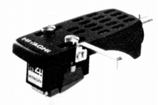

MT-11F

■価格 12,000円■発電方式 MM型■出力電圧 1.5〜2.5mV■針圧 1.5〜2g■再生周波数帯域 10-50,000Hz■チャンネルセパレーション ■チャンネルバランス ■コンプライアンス ■負荷抵抗 ■負荷容量 ■インピーダンス ■針先 ■自重 ■交換針 ■発売 1973年頃■販売終了 ■備考 価格は1973年頃のもの4チャンネル(CD-4）対応機「日立」時代の製品
Lo-Dのインデックスへ